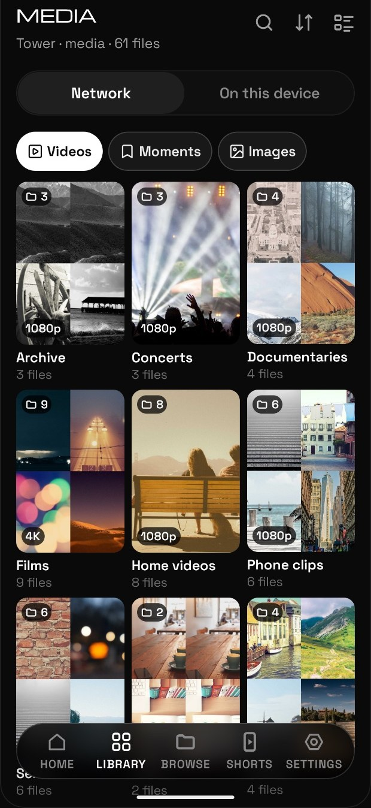
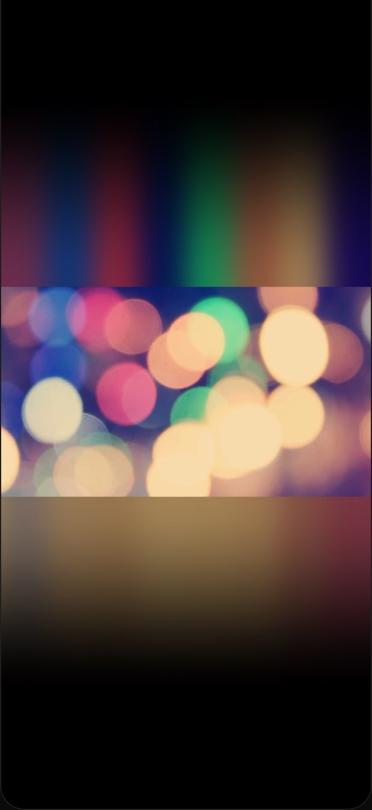

Your SMB share, as a video library.
A native Android video player for the files on your own network share. Posters, chapters, resume points and thumbnail scrubbing, streamed in place. Nothing is copied off the share, and nothing leaves your network.



Collections, not folders of files.
Each folder is a poster on the wall: its own poster.jpg, or a fanned deck of frames from the videos inside. Open one and it becomes a page of its own, lit by its poster, with its figures and Play all.
- Mixes. Mark a grab-bag folder like Assorted as a mix, and the wall splits into Collections and Mixes. The mark is a hidden file on the share, so it travels with the folder.
- One row of chips that gets out of the way. Scroll down the wall and the chips and the nav pill slide away; scroll up a little and they're back.
- Sort and view. Name, date added, size, runtime or resolution, as posters or rows, with an A to Z rail on long walls.
Swipe up off the nav, and you're searching.
From any tab, push up off the nav pill. Its tabs fold away and it rises with your thumb as a search bar, its rim filling as you go; let go past the line and it flies into Search's field with the keyboard up. Search reads titles, filenames, folders and named moments from an index on the phone, so results arrive even while a scan is still walking the share.
- Collections first. Folders that match sit at the top as posters, above the keyboard where you can see them.
- "In Collection ›" on every video. One tap from a video to the collection it lives in, with the match marked in red.
- Home picks up where you were. Continue watching, Newly added, what's on this device, and every moment you have named.
Run by your thumb. Lit by the film.
Double-tap a side to jump ten seconds, hold for double speed, drag the edges for brightness and volume, pinch to fill or fit. Color bleed reads the colour along each edge of the picture and shines it into the bars around it, like a light strip behind a TV.
- Scrub by thumbnail. Frames appear above your finger as you drag, pulled off the share ahead of time.
- Chapters you can write. Mark a place and name it. It's saved beside the film on the share as a small text file other tools can read, so it survives a reinstall.
- Keeps playing while you look around. Put the player away and it becomes a bar above the nav, or a card in the corner of the inner screen.
- Posters you choose. Make one from any frame, crop it to 2:3, and it's saved as the folder's
poster.jpg.
The photos on your share belong in the library too.
Every folder of pictures is an album, laid out as a mosaic where each picture keeps its own shape. Open the lightbox to swipe through them, or play an album as a story with a bar of segments along the top.
- Shorts. Every upright clip on your shares as a feed: swipe up for the next, hold for double speed, with a fresh shuffle each visit.
- Set any picture as a poster. From the lightbox or a selection, cropped to fit.


Manage the share, not just the library.
Hold any video, collection or folder to start picking, and the nav pill becomes that selection's toolbar: Download, Move, Rename, Delete. The same four, the same way, in the Library, Browse and Search.
- Takes a batch offline. Pick a folder and everything inside it downloads, with progress in one notification.
- Sends files the other way. Upload photos, videos or any file from the phone into a folder on the share.
- Plays what the phone already has. Camera, Movies, Download and the rest sit beside your downloads under On this device.

Opens out on the inner screen.
Unfolded, Regolith gets layouts of its own: a nav rail down the side that retracts to a thin spine when you leave it alone, more posters across, and a page that opens beside the wall instead of over it.
- Pinch the wall. Four to seven posters across, pinched in place; an "N across" pill says where you are.
- The mini player becomes a card in the corner, and the film keeps playing as you browse.
Locks itself, and keeps quiet.
Ask for a fingerprint, face or the phone's screen lock before the library shows, after as long away as you choose. While locked, the notification says only "Regolith · Playing". Spoof mode swaps every name and picture for made-up ones, so you can show the app without showing your library.
Near-black ground, white ink, one red.
The interface stays out of the way of the pictures. Surfaces step up from the ground by a few shades, hairlines separate rather than boxes, and the accent red is spent once per screen, on the action that matters there.
#0A0A0AEvery page's background#0F0F0FCards and sheets, one step up#1F1F1F1 dp borders and dividers#2E2E2EPressed states, knobs, outlines#FFFFFFTitles, labels, lit chips#A0A0A0Body copy#6E6E6ESmall details under a tile#E11B17The accent: one filled red per screenWide and machined, for screen titles and the wordmark. Set in capitals with open tracking, never for running text.
- Screen title
- 15 / 19.5
- Wordmark
- Capitals, 0.14 em tracking
Everything else: names, details, buttons and chips, from 400 to 700.
- Tile name
- 600, 12 / 14
- Chip
- 600–700, 12–13
- Eyebrow
- 600, 11, 0.14 em, capitals
Pictures are the content
A picked poster is ringed, never tinted, and chips sit over art on a 72% black so they never read as part of the picture.
Pills, not boxes
Chips, the nav and the mini player are full pills over a frosted 6% white, edged by an 18% white hairline.
Lucide icons
One stroke-icon family across the app, at 19 dp in bars and the nav, beside short tracked labels.
Your share, as a library, in your pocket.
Android 14 or newer. Each release installs over the last and keeps your library, chapters and resume points.